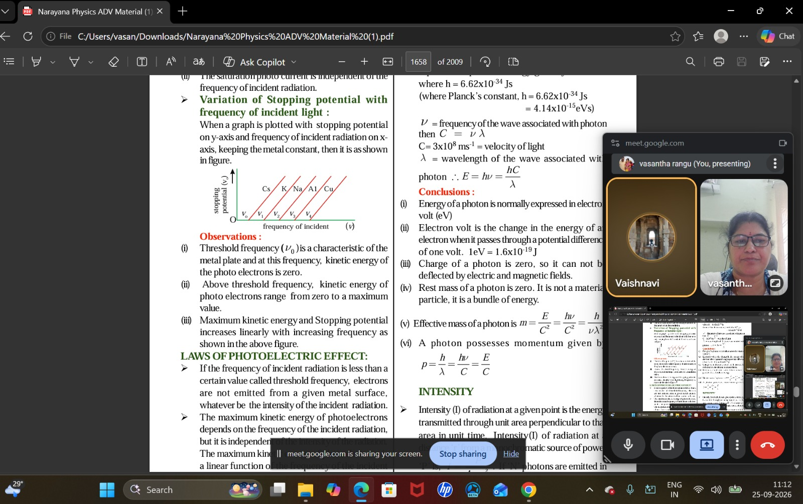
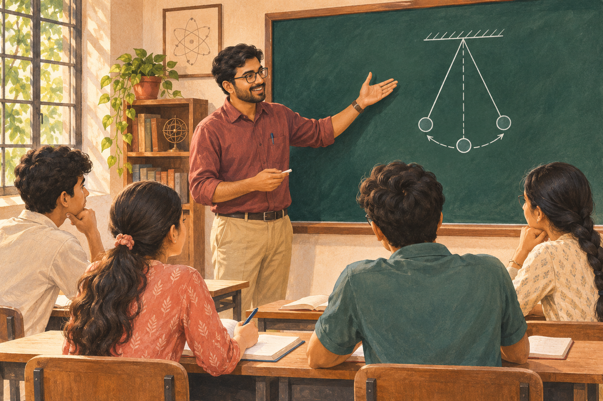

GRADES 8–10
Foundation
Make the basics your strength. Build a clearer understanding of science and mathematics.
Science · Mathematics
BIG DREAMS. STRONG FOUNDATIONS.
Understand the concept. Build the confidence. Move towards your goal. Explore online and classroom coaching with experienced Physics educators and mentors for IIT-JEE, NEET and beyond.
Different goals. Different journeys.
The same belief in your potential.
NEET ✦ JEE ✦ FOUNDATION ✦ CUET ✦ EAPCET
01 / FIND YOUR DIRECTION
Start with where you are.
We’ll help you explore what comes next.
GRADES 8–10
Make the basics your strength. Build a clearer understanding of science and mathematics.
MEDICAL ENTRANCE
Connect concepts with practice as you work towards your ambition of a career in medicine.
ENGINEERING ENTRANCE
Strengthen your problem-solving approach, one concept and one challenging question at a time.
MORE POSSIBILITIES
Explore a focused preparation path for the entrance examination that matches your next step.
Ask admissions about available subjects, batches, timings and fees for your chosen programme.
02 / SAME AMBITION. YOUR WAY.
Choose online classes or learn in person.
Find the setting that helps you focus.

Bring focused Physics learning into your own study space. See a real online session above, then talk to us about the class format, timings and guidance available for your programme.

Learn face to face, explore ideas with your teacher and bring difficult questions into the discussion. Ask about the centre location and available classroom batches for your programme.
THE GANESH CLASSES APPROACH
A strong answer starts with understanding.
Our approach connects concepts, practice and confidence.
Connect a new concept with something familiar. Real-life examples make abstract Physics easier to picture, explain and remember.
Identify what a question gives you, choose the right principle and work through the reasoning. Learn efficient methods with a clear understanding of when to use them.
Use mistakes to spot what needs another look. Thoughtful guidance helps students approach difficult topics, examination pressure and their next academic choices.
A SMALL EXAMPLE. A BIG IDEA.
For the same acceleration, a trolley with less mass needs less force. Newton’s second law, F = ma, connects the formula with an everyday experience. That connection is where understanding begins.
03 / PEOPLE BEHIND THE PROGRESS
Founded by Mr. R. Ganesh, Ganesh Classes brings together subject knowledge, practical teaching and personal mentorship. Meet the educators who connect Physics with everyday life and help students approach challenging questions with confidence.
Get to know your teachersPhysics educator · IIT-JEE & NEET mentor
A student-focused Physics educator who makes complex concepts clearer through real-life examples, practical applications and effective problem-solving, helping students build knowledge and confidence.
Mr. R. Ganesh is the founder and academic mentor of Ganesh Classes. With an M.Sc. in Physics, a B.Ed. and more than 23 years of teaching experience, he brings extensive expertise in IIT-JEE, NEET and EAMCET coaching, alongside over a decade of institutional leadership.
Throughout his career, he has mentored students who have secured admissions to IITs, NITs and leading medical colleges across India. His student-friendly teaching connects Physics with real-life applications and practical examples, emphasising conceptual clarity, analytical thinking, efficient problem-solving methods and application-based learning.
Beyond the classroom, he helps students manage examination stress, build self-confidence, develop a positive mindset and make informed career choices.
“Education is not just about preparing students for examinations; it is about building knowledge, confidence, character and the ability to succeed in life.”
— Mr. R. Ganesh
At Ganesh Classes, he strives to make quality education accessible, effective and result-oriented, helping every student discover their potential and move closer to their dreams.
Physics educator · Vice President, I-WIN Learning Solutions
An experienced Physics educator who brings deep subject knowledge and thoughtful pedagogy to IIT-JEE and NEET preparation, connecting classroom teaching with digital learning.
Vasantha Laxmi Rangu began her education career in 2003 as a Physics faculty member specialising in IIT-JEE and NEET coaching. With over 24 years in education, her work combines subject expertise, effective teaching methods and academic leadership.
She currently serves as Vice President at I-WIN Learning Solutions, leading curriculum innovation, digital transformation and academic partnerships in India and overseas. She joined I-WIN in 2019 as a Senior Subject Matter Expert and was promoted to Assistant Vice President in 2020.
Working with leaders of public and private institutions, she helps implement structured, technology-enabled academic programmes. She has also been closely involved in establishing and managing I-WIN’s UAE operations, making regular visits to support administration, stakeholder engagement and academic alignment with regulatory expectations.
04 / THEIR JOURNEY. THEIR WORDS.
Real experiences, in their own voices.
A closer look at life at Ganesh Classes.
Watch a student share her experience of learning at Ganesh Classes.
A REAL VOICE. A PERSONAL JOURNEY.
Get a student’s perspective on her experience. Watch the full review and hear it in her own words.
Press play to watch.
Use fullscreen for a closer view.
More student experiences will be shared here.
A LITTLE MORE CLARITY
Choosing a class is a big decision.
Let’s make the next step easier.
Our educators focus on conceptual clarity, real-life examples and practical problem-solving. The aim is to help students understand the reasoning behind a method and build the confidence to apply it.
Yes. Parents can join the initial conversation, share concerns and ask about the programme, teaching approach and available class options. Include any specific questions in your enquiry.
Yes. Ganesh Classes offers online and classroom learning. Select your preferred mode in the enquiry form and ask about the batches available for your programme.
Start with your current class and the exam or subject you want to prepare for. Share these in your enquiry so the teaching team can discuss a suitable path.
Ask admissions for the current schedule, fees and centre details. These may differ by programme and learning mode.
Absolutely. Include a demo class request in your enquiry. The team can confirm whether a session is available for your chosen course and mode.
BEFORE YOU JOIN
Students and parents are welcome.
Bring your goals, your questions and your expectations.
Tell us your current class, the subject or examination you are preparing for, and the areas where you would like guidance.
Discuss online or classroom learning, available batches and timings. Ask about fees, the course outline and whether a demo session is available.
Confirm the programme and practical details with the team before joining. Choose a learning plan that fits your needs and study routine.
YOUR NEXT CHAPTER STARTS HERE
Tell us where you are and where you want to go. Prepare an enquiry about the programme, batch or demo class you’re interested in.
Choose what works for you.